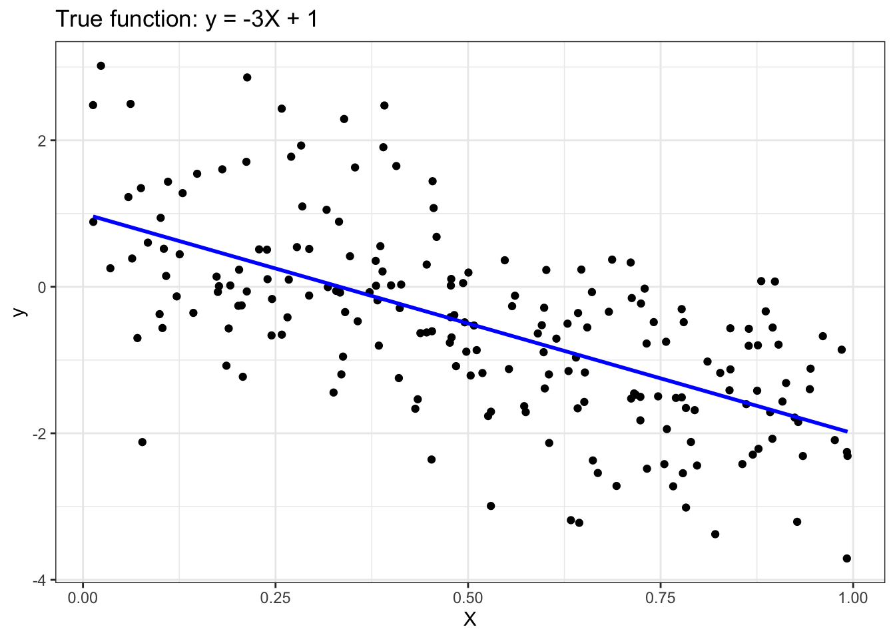
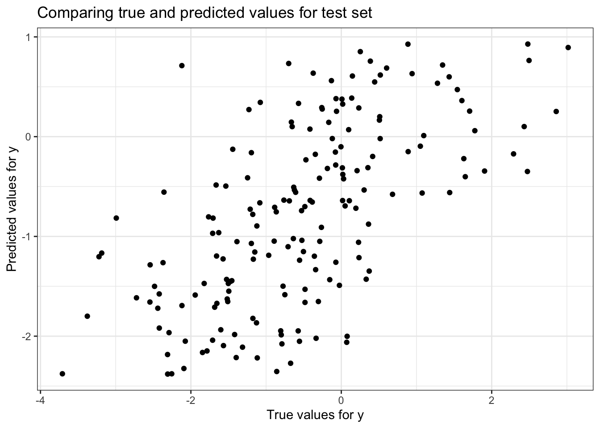
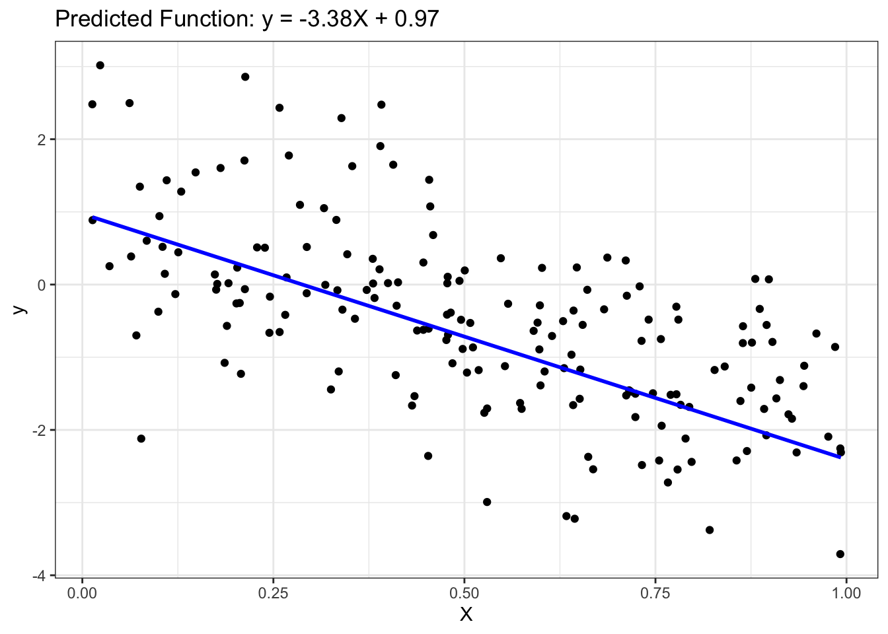
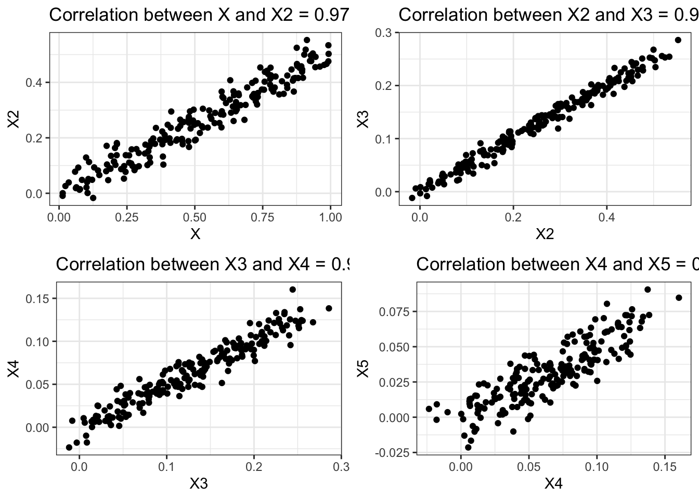
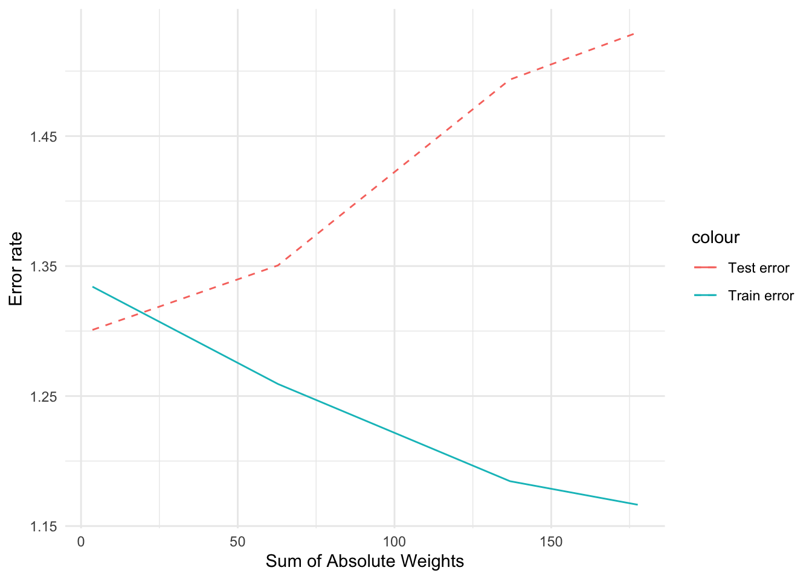

pacman::p_load(tidymodels, tidyverse, ranger, randomForest, glmnet, gridExtra)# Setting up a global themetheme_set(theme_bw() +theme(legend.position ="top"))
Regression
Regression is a modeling technique for predicting quantitative-valued target attributes. The goals for this tutorial are as follows:
To provide examples of using different regression methods for the stock prices dataset.
To demonstrate the problem of model overfitting due to correlated attributes in the data.
To illustrate how regularization can be used to avoid model overfitting.
Synthetic Data Generation
# This block sets parameters for the analysis.seed <-1# Set the random seed for reproducibilitynumInstances <-200# Define the total number of instances in the dataset# Set seedset.seed(seed)# Generating dataX <-matrix(runif(numInstances), ncol=1)y_true <--3*X +1y <- y_true +matrix(rnorm(numInstances), ncol=1)
Here we have set seed and created Synthetic data randomly. We are using function which is relating y to x as y=3x+1. Also added gaussian noise.
# Plotting the generated data to visualize the linear relationshipggplot() +geom_point(aes(x=X, y=y), color="black") +geom_line(aes(x=X, y=y_true), color="blue", linewidth=1) +ggtitle('True function: y = -3X + 1') +xlab('X') +ylab('y') # Create a scatter plot of the generated data

The points represent the generated data, and the blue line shows the linear relationship between x and y without the additive gaussian noise.
Multiple Linear Regression
Given a training set X,y MLR is designed to learn f(X,w)=XTw +w0 by minimizing the following loss function given a training set
L(y,f(X,w)) = (i=1 to n)∑ ||yi- Xiw-w0||
where w (slope) and w0 (intercept) are the regression coefficients.
Given the input dataset, the following steps are performed:
1. Split the input data into their respective training and test sets.
2. Fit multiple linear regression to the training data.
3. Apply the model to the test data.
4. Evaluate the performance of the model.
5. Postprocessing: Visualizing the fitted model.
1) Split Input Data into Training and Test Sets
# This section splits the data into training and test setsnumTrain <-20# number of training instancesnumTest <- numInstances - numTrainset.seed(123) # For reproducibility# Combine X and y into a tibble for easier data manipulationdata <-tibble(X = X, y = y)split_obj <-initial_split(data, prop = numTrain/numInstances)# Split the dataset into training and testing setstrain_data <-training(split_obj)test_data <-testing(split_obj)# Extract training and testing data from the split object# Training setsX_train <- train_data$Xy_train <- train_data$y# Test setsX_test <- test_data$Xy_test <- test_data$y
2) Fit Regression Model to Training Set
# Setting up a linear regression model using the 'lm' enginelin_reg_spec <-linear_reg() |>set_engine("lm")# Fit the linear regression model to the training datalin_reg_fit <- lin_reg_spec |>fit(y ~ X, data = train_data)# Interpretation: # This step involves creating a linear regression model using the training data
3) Apply Model to the Test Set
# This block applies the model to the test datay_pred_test <-predict(lin_reg_fit, new_data = test_data) |>pull(.pred)# Interpretation: # Involves predicting the response variable for the test set using the fitted model
4) Evaluate Model Performance on Test Set
# This block evaluates the performance of the model on the test set# Create a scatter plot to compare true and predicted values of the response variable for the test setggplot() +geom_point(aes(x =as.vector(y_test), y = y_pred_test), color ='black') +ggtitle('Comparing true and predicted values for test set') +xlab('True values for y') +ylab('Predicted values for y')

# Interpretation: # This part assesses how well the model predicts the response variable on new data
# Organize test data and predictions for model evaluationeval_data <-tibble(truth =as.vector(y_test),estimate = y_pred_test)# Calculate and display the Root Mean Squared Error (RMSE) and R squared value of the modelrmse_value <-rmse(data = eval_data, truth = truth, estimate = estimate)r2_value <-rsq(eval_data, truth = truth, estimate = estimate)
cat("Root mean squared error =", sprintf("%.4f", rmse_value$.estimate), "\n")
Root mean squared error = 1.0273
-The low value of RMS error shows the model is a good fit.
The R-squared value is desired to be closer to 1. Here, the value is comparatively low suggesting that the data does not fit well to new data.
5) Postprocessing
# This block involves postprocessing steps after model evaluation# Extract and display the slope coefficient from the linear regression modelcoef_values <-coef(lin_reg_fit$fit) slope <- coef_values["X"]intercept <- coef_values["(Intercept)"]
# Output the intercept of the linear regression modelcat("Slope =", slope, "\n")
Slope = -3.376872
cat("Intercept =", intercept, "\n")
Intercept = 0.9723522
# Plot the test data and the predicted linear function, displaying the model's fitted lineggplot() +geom_point(aes(x =as.vector(X_test), y =as.vector(y_test)), color ='black') +geom_line(aes(x =as.vector(X_test), y = y_pred_test), color ='blue', linewidth =1) +ggtitle(sprintf('Predicted Function: y = %.2fX + %.2f', slope, intercept)) +xlab('X') +ylab('y')

Created training and test sets. Trained the model on the training data and determined the parameter for the linear regression.
Effect of Correlated Attributes
Create correlated attributes
# Generate additional predictor variables (X2, X3, X4, X5) that are correlated with each otherset.seed(1)X2 <-0.5* X +rnorm(numInstances, mean=0, sd=0.04)X3 <-0.5* X2 +rnorm(numInstances, mean=0, sd=0.01)X4 <-0.5* X3 +rnorm(numInstances, mean=0, sd=0.01)X5 <-0.5* X4 +rnorm(numInstances, mean=0, sd=0.01)
# Create and display scatter plots to visualize correlations between each pair of generated variablesplot1 <-ggplot() +geom_point(aes(X, X2), color='black') +xlab('X') +ylab('X2') +ggtitle(sprintf("Correlation between X and X2 = %.4f", cor(X[-c((numInstances-numTest+1):numInstances)], X2[-c((numInstances-numTest+1):numInstances)])))plot2 <-ggplot() +geom_point(aes(X2, X3), color='black') +xlab('X2') +ylab('X3') +ggtitle(sprintf("Correlation between X2 and X3 = %.4f", cor(X2[-c((numInstances-numTest+1):numInstances)], X3[-c((numInstances-numTest+1):numInstances)])))plot3 <-ggplot() +geom_point(aes(X3, X4), color='black') +xlab('X3') +ylab('X4') +ggtitle(sprintf("Correlation between X3 and X4 = %.4f", cor(X3[-c((numInstances-numTest+1):numInstances)], X4[-c((numInstances-numTest+1):numInstances)])))plot4 <-ggplot() +geom_point(aes(X4, X5), color='black') +xlab('X4') +ylab('X5') +ggtitle(sprintf("Correlation between X4 and X5 = %.4f", cor(X4[-c((numInstances-numTest+1):numInstances)], X5[-c((numInstances-numTest+1):numInstances)])))# Combine plots grid.arrange(plot1, plot2, plot3, plot4, ncol=2)

There is noticeable correlation between all variables here specially between X2 and X3.
# Split the dataset with correlated variables into training and test setstrain_indices <-1:(numInstances - numTest)test_indices <- (numInstances - numTest +1):numInstances# Create combined training and testing setsX_train2 <-cbind(X[train_indices], X2[train_indices])X_test2 <-cbind(X[test_indices], X2[test_indices])X_train3 <-cbind(X[train_indices], X2[train_indices], X3[train_indices])X_test3 <-cbind(X[test_indices], X2[test_indices], X3[test_indices])X_train4 <-cbind(X[train_indices], X2[train_indices], X3[train_indices], X4[train_indices])X_test4 <-cbind(X[test_indices], X2[test_indices], X3[test_indices], X4[test_indices])X_train5 <-cbind(X[train_indices], X2[train_indices], X3[train_indices], X4[train_indices], X5[train_indices])X_test5 <-cbind(X[test_indices], X2[test_indices], X3[test_indices], X4[test_indices], X5[test_indices])
# Convert the training data matrices into tibble format for each model with increasing number of predictorstrain_data2 <-tibble(X1 = X_train2[,1], X2 = X_train2[,2], y = y_train)train_data3 <-tibble(X1 = X_train3[,1], X2 = X_train3[,2], X3 = X_train3[,3], y = y_train)train_data4 <-tibble(X1 = X_train4[,1], X2 = X_train4[,2], X3 = X_train4[,3], X4 = X_train4[,4], y = y_train)train_data5 <-tibble(X1 = X_train5[,1], X2 = X_train5[,2], X3 = X_train5[,3], X4 = X_train5[,4], X5 = X_train5[,5], y = y_train)
# Fit linear regression models for each set of predictors, and adding more correlated variablesregr2_spec <-linear_reg() %>%set_engine("lm")regr2_fit <- regr2_spec %>%fit(y ~ X1 + X2, data = train_data2)regr3_spec <-linear_reg() %>%set_engine("lm")regr3_fit <- regr3_spec %>%fit(y ~ X1 + X2 + X3, data = train_data3)regr4_spec <-linear_reg() %>%set_engine("lm")regr4_fit <- regr4_spec %>%fit(y ~ X1 + X2 + X3 + X4, data = train_data4)regr5_spec <-linear_reg() %>%set_engine("lm")regr5_fit <- regr5_spec %>%fit(y ~ X1 + X2 + X3 + X4 + X5, data = train_data5)
# Convert training and test data matrices into data frames and perform predictions using the trained modelsnew_train_data2 <-setNames(as.data.frame(X_train2), c("X1", "X2"))new_test_data2 <-setNames(as.data.frame(X_test2), c("X1", "X2"))new_train_data3 <-setNames(as.data.frame(X_train3), c("X1", "X2", "X3"))new_test_data3 <-setNames(as.data.frame(X_test3), c("X1", "X2", "X3"))new_train_data4 <-setNames(as.data.frame(X_train4), c("X1", "X2", "X3", "X4"))new_test_data4 <-setNames(as.data.frame(X_test4), c("X1", "X2", "X3", "X4"))new_train_data5 <-setNames(as.data.frame(X_train5), c("X1", "X2", "X3", "X4", "X5"))new_test_data5 <-setNames(as.data.frame(X_test5), c("X1", "X2", "X3", "X4", "X5"))# Predictionsy_pred_train2 <-predict(regr2_fit, new_data = new_train_data2)y_pred_test2 <-predict(regr2_fit, new_data = new_test_data2)y_pred_train3 <-predict(regr3_fit, new_data = new_train_data3)y_pred_test3 <-predict(regr3_fit, new_data = new_test_data3)y_pred_train4 <-predict(regr4_fit, new_data = new_train_data4)y_pred_test4 <-predict(regr4_fit, new_data = new_test_data4)y_pred_train5 <-predict(regr5_fit, new_data = new_train_data5)y_pred_test5 <-predict(regr5_fit, new_data = new_test_data5)
# Extract model coefficients, calculate RMSE for train and test sets, and compute the sum of absolute weights for each model# Extract coefficients and interceptsget_coef <-function(model) { coef <-coefficients(model$fit) coef}# Calculate RMSEcalculate_rmse <-function(actual, predicted) { rmse <-sqrt(mean((actual - predicted)^2)) rmse}results <-tibble(Model =c(sprintf("%.2f X + %.2f", get_coef(regr2_fit)['X1'], get_coef(regr2_fit)['(Intercept)']),sprintf("%.2f X + %.2f X2 + %.2f", get_coef(regr3_fit)['X1'], get_coef(regr3_fit)['X2'], get_coef(regr3_fit)['(Intercept)']),sprintf("%.2f X + %.2f X2 + %.2f X3 + %.2f", get_coef(regr4_fit)['X1'], get_coef(regr4_fit)['X2'], get_coef(regr4_fit)['X3'], get_coef(regr4_fit)['(Intercept)']),sprintf("%.2f X + %.2f X2 + %.2f X3 + %.2f X4 + %.2f", get_coef(regr5_fit)['X1'], get_coef(regr5_fit)['X2'], get_coef(regr5_fit)['X3'], get_coef(regr5_fit)['X4'], get_coef(regr5_fit)['(Intercept)'])),Train_error =c(calculate_rmse(y_train, y_pred_train2$.pred),calculate_rmse(y_train, y_pred_train3$.pred),calculate_rmse(y_train, y_pred_train4$.pred),calculate_rmse(y_train, y_pred_train5$.pred)),Test_error =c(calculate_rmse(y_test, y_pred_test2$.pred),calculate_rmse(y_test, y_pred_test3$.pred),calculate_rmse(y_test, y_pred_test4$.pred),calculate_rmse(y_test, y_pred_test5$.pred)),Sum_of_Absolute_Weights =c(sum(abs(get_coef(regr2_fit))),sum(abs(get_coef(regr3_fit))),sum(abs(get_coef(regr4_fit))),sum(abs(get_coef(regr5_fit)))))
# Visualize the relationship between model complexity (sum of absolute weights) and error rates for training and testing setsggplot(results, aes(x = Sum_of_Absolute_Weights)) +geom_line(aes(y = Train_error, color ="Train error"), linetype ="solid") +geom_line(aes(y = Test_error, color ="Test error"), linetype ="dashed") +labs(x ="Sum of Absolute Weights", y ="Error rate") +theme_minimal()

There is significant error when model is implemented on the test data.
-The code focused on the impact of adding correlated predictors to linear regression models, revealing the trade-off between model complexity and accuracy in predictions
Ridge Regression
# Convert the training and testing sets into data frames for ridge regressiontrain_data <-tibble(y = y_train, X_train5)test_data <-tibble(y = y_test, X_test5)
# Define a ridge regression model with a specified penaltyridge_spec <-linear_reg(penalty =0.4, mixture =1) %>%set_engine("glmnet")
# Fit the ridge regression model to the training dataridge_fit <- ridge_spec %>%fit(y ~ ., data = train_data)
# Predict response variables for both training and testing sets using the ridge model# Making predictionsy_pred_train_ridge <-predict(ridge_fit, new_data = train_data)$.predy_pred_test_ridge <-predict(ridge_fit, new_data = test_data)$.pred# Making predictionsy_pred_train_ridge <-predict(ridge_fit, new_data = train_data)$.predy_pred_test_ridge <-predict(ridge_fit, new_data = train_data)$.pred
Ridge regression is a statistical method for linear regression that is used to solve problems of multicollinearity. Multicollinearity occurs when two or more predictor variables in a regression model are highly correlated with each other. This can make it difficult to estimate the true coefficients of the predictor variables, and can lead to inaccurate predictions.
Here, By tuning the parameter values to 0, it has decreased the error on test data.
Lasso Regression
# Define the lasso regression model with a specified penaltylasso_spec <-linear_reg(penalty =0.02, mixture =1) %>%set_engine("glmnet")
# Prepare the training data in the required format for lasso regressiontrain_data <-tibble(y = y_train, X1 = X_train5[,1], X2 = X_train5[,2], X3 = X_train5[,3], X4 = X_train5[,4], X5 = X_train5[,5])
# Fit the lasso regression model to the training datalasso_fit <- lasso_spec %>%fit(y ~ ., data = train_data)
# Extract the coefficients from the fitted lasso modellasso_coefs <- lasso_fit$fit$beta[,1]
# Predict response variables for training and testing sets using the lasso modely_pred_train_lasso <-predict(lasso_fit, new_data = train_data)$.predy_pred_test_lasso <-predict(lasso_fit, new_data =tibble(X1 = X_test5[,1], X2 = X_test5[,2], X3 = X_test5[,3], X4 = X_test5[,4], X5 = X_test5[,5]))$.pred
# Convert the lasso model's coefficients into a readable stringmodel7 <-sprintf("%.2f X + %.2f X2 + %.2f X3 + %.2f X4 + %.2f X5 + %.2f", lasso_coefs[2], lasso_coefs[3], lasso_coefs[4], lasso_coefs[5], lasso_coefs[6], lasso_fit$fit$a0[1])values7 <-c(model7, sqrt(mean((y_train - y_pred_train_lasso)^2)),sqrt(mean((y_test - y_pred_test_lasso)^2)),sum(abs(lasso_coefs[-1])) +abs(lasso_fit$fit$a0[1]))
# Compile the lasso regression results into a summary tablelasso_results <-tibble(Model ="Lasso",`Train error`= values7[2], `Test error`= values7[3], `Sum of Absolute Weights`= values7[4])lasso_results
# A tibble: 1 × 4
Model `Train error` `Test error` `Sum of Absolute Weights`
<chr> <chr> <chr> <chr>
1 Lasso 1.22083472815552 1.36447668533408 0.750560758224512
Lasso regression, also known as L1 regularization, is a type of linear regression that uses shrinkage to improve prediction accuracy and interpretability. It achieves this by adding a penalty term to the traditional least squares model, which encourages sparse solutions where some coefficients are forced to be exactly zero. This means that Lasso regression can effectively select relevant features and remove irrelevant ones, leading to a more interpretable model.
Hyperparameter Selection via Cross-Validation
Ridge Regression Model
# Prepare the combined training data in a tibble format for ridge regressiony_train <-as.vector(y_train)train_data <-tibble(y = y_train, X1 = X_train5[,1], X2 = X_train5[,2], X3 = X_train5[,3], X4 = X_train5[,4], X5 = X_train5[,5])
# Set up a normalized recipe and define ridge regression specification for hyperparameter tuning# Define reciperecipe_obj <-recipe(y ~ ., data = train_data) %>%step_normalize(all_predictors()) |>prep()# Define the ridge specificationridge_spec <-linear_reg(penalty =tune(), mixture =0) %>%set_engine("glmnet")
# Create a workflow combining the ridge model and recipe for tuningridge_wf <-workflow() |>add_model(ridge_spec) |>add_recipe(recipe_obj)
# Conduct hyperparameter tuning over a range of penalties for ridge regression# Grid of alphas(penalties)alphas <-tibble(penalty =c(0.2, 0.4, 0.6, 0.8, 1.0))# Tunetune_results <- ridge_wf |>tune_grid(resamples =bootstraps(train_data, times =5),grid = alphas)# Extract best parameters for the modelbest_params <- tune_results %>%select_best("rmse")
# Refit the ridge regression model using the best tuned hyperparameters# Refit the model using best_paramsridge_fit <- ridge_spec %>%finalize_model(best_params) %>%fit(y ~ ., data = train_data)# Extract coefficientsridge_coefs <- ridge_fit$fit$beta[,1]
# Predict responses using the refitted ridge model on both training and test datay_pred_train_ridge <-predict(ridge_fit, new_data = train_data)$.predy_pred_test_ridge <-predict(ridge_fit, new_data =tibble(X1 = X_test5[,1], X2 = X_test5[,2], X3 = X_test5[,3], X4 = X_test5[,4], X5 = X_test5[,5]))$.pred
# Formulate the ridge regression model's equation using the extracted coefficientsmodel6 <-sprintf("%.2f X + %.2f X2 + %.2f X3 + %.2f X4 + %.2f X5 + %.2f", ridge_coefs[2], ridge_coefs[3], ridge_coefs[4], ridge_coefs[5], ridge_coefs[6], ridge_fit$fit$a0[1])values6 <-c(model6, sqrt(mean((y_train - y_pred_train_ridge)^2)),sqrt(mean((y_test - y_pred_test_ridge)^2)),sum(abs(ridge_coefs[-1])) +abs(ridge_fit$fit$a0[1]))
# Compile a summary table for the ridge regression model including errors and weightsridge_results <-tibble(Model ="RidgeCV",`Train error`= values6[2], `Test error`= values6[3], `Sum of Absolute Weights`= values6[4])cat("Selected alpha =", best_params$penalty, "\n")
Selected alpha = 1
# Merge and display the overall results of ridge regression including the selected alphaall_results <-bind_rows(results, ridge_results)all_results
# A tibble: 5 × 7
Model Train_error Test_error Sum_of_Absolute_Weig…¹ `Train error` `Test error`
<chr> <dbl> <dbl> <dbl> <chr> <chr>
1 -0.5… 1.33 1.30 3.64 <NA> <NA>
2 0.34… 1.26 1.35 62.8 <NA> <NA>
3 0.07… 1.18 1.49 137. <NA> <NA>
4 -1.8… 1.17 1.53 178. <NA> <NA>
5 Ridg… NA NA NA 1.3309131350… 1.295979736…
# ℹ abbreviated name: ¹Sum_of_Absolute_Weights
# ℹ 1 more variable: `Sum of Absolute Weights` <chr>
Hyperparameter tuning is not very effective here for Ridge Regression.
# Interpretation:# This section perfoormed cross-validation to optimally tune the penalty parameter in ridge regression, enhancing model performance by balancing bias and variance
Lasso Regression Model
# Set a random seed for reproducibility and ensuring y_train is a vectorset.seed(1234)# Ensure y_train is a vectory_train <-as.vector(y_train)
# Organize the training data into a tibble format for lasso regressiontrain_data <-tibble(y = y_train, X1 = X_train5[,1], X2 = X_train5[,2], X3 = X_train5[,3], X4 = X_train5[,4], X5 = X_train5[,5])
# Establish a normalized recipe and set up lasso regression specification for tuning# Define reciperecipe_obj_lasso <-recipe(y ~ ., data = train_data) %>%step_normalize(all_predictors()) |>prep()# Define the lasso specificationlasso_spec <-linear_reg(penalty =tune(), mixture =1) %>%set_engine("glmnet")
# Construct a workflow for lasso regression, combining the model and recipe# Lasso workflowlasso_wf <-workflow() |>add_recipe(recipe_obj_lasso)# Lasso fitlasso_fit <- lasso_wf |>add_model(lasso_spec) |>fit(data = train_data)
# Perform hyperparameter tuning for the lasso model across a range of penalty values# Grid of alphas for Lassolambda_grid <-grid_regular(penalty(), levels =50)# Tunetune_results_lasso <-tune_grid(lasso_wf |>add_model(lasso_spec),resamples =bootstraps(train_data, times =5),grid = lambda_grid)
→ A | warning: A correlation computation is required, but `estimate` is constant and has 0 standard deviation, resulting in a divide by 0 error. `NA` will be returned.
There were issues with some computations A: x1
There were issues with some computations A: x5
# Extract best parameters for Lassobest_params_lasso <- tune_results_lasso %>%select_best("rmse")
# Refit the lasso model using the optimally tuned hyperparameters(best_params_lasso) using CV# Refit the model using Lassolasso_fit <- lasso_spec %>%finalize_model(best_params_lasso) %>%fit(y ~ ., data = train_data)# Extract coefficientslasso_coefs <- lasso_fit$fit$beta[,1]
# Generate predictions using the refitted lasso model on training and test datasetsy_pred_train_lasso <-predict(lasso_fit, new_data = train_data)$.predy_pred_test_lasso <-predict(lasso_fit, new_data =tibble(X1 = X_test5[,1], X2 = X_test5[,2], X3 = X_test5[,3], X4 = X_test5[,4], X5 = X_test5[,5]))$.pred
# Form the lasso regression model equation with the extracted coefficientsmodel7 <-sprintf("%.2f X + %.2f X2 + %.2f X3 + %.2f X4 + %.2f X5 + %.2f", lasso_coefs[2], lasso_coefs[3], lasso_coefs[4], lasso_coefs[5], lasso_coefs[6], lasso_fit$fit$a0[1])values7 <-c(model7, sqrt(mean((y_train - y_pred_train_lasso)^2)),sqrt(mean((y_test - y_pred_test_lasso)^2)),sum(abs(lasso_coefs[-1])) +abs(lasso_fit$fit$a0[1]))
# Create a summary table for the lasso model, including model errors and weightslasso_results <-tibble(Model ="LassoCV",`Train error`= values7[2], `Test error`= values7[3], `Sum of Absolute Weights`= values7[4])cat("Selected alpha for Lasso =", best_params_lasso$penalty, "\n")
Selected alpha for Lasso = 0.6250552
lasso_results
# A tibble: 1 × 4
Model `Train error` `Test error` `Sum of Absolute Weights`
<chr> <chr> <chr> <chr>
1 LassoCV 1.34525910987747 1.28985807470116 0.750560758224512
Hyperparameter tuning has performed better to minimise error in the case of Lasso Regression.